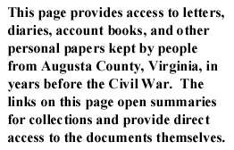

|
 |
To search select personal papers by keyword, author, or subject,
go to the letters or diaries search pages.
A | B | C | D | E | F | G | H | I | J | K | L | M | N | O | P | Q | R | S | T | U | V | W | X | Y | Z | Assorted | Additional
In this brief prewar letter (1859) written from Staunton, B. S. Brooke comments upon the economic situation in Staunton, the insurrection, and slave sales.
In this prewar letter (1840), ten-year-old Melly Clayton writes her aunt and relates how she and her family are doing, discusses the upcoming 1840 presidential election (declaring herself to be a Whig), and alludes to a possible religious "Camp meeting in Sept."
This collection contains prewar letters (1860-1861) written by two brothers from Augusta County who would eventually enlist in Virginia regiments. John H. Cochran enlisted as a private in the 46th Virginia Infantry in 1861. Before he did so, he wrote this eloquent series of letters to his mother about the Virginia secession debate. Cochran shares his pro-secession views and describes the division of Virginians over the issue. His brother, Benjamin Franklin Cochran, became a private in the 1st Virginia Cavalry, and he writes about the defense of Virginia in 1861. This collection also includes one letter from the Cochrans' cousin, A.G. Guskins, who writes from South Carolina about the secession crisis. You may also read the wartime letters (1861) of the Cochran family.
Before the Civil War, William H. Dunlap served as a miller's apprentice and Samuel A. Dunlap worked as a day laborer. The prewar letters (1853-1860) of the Dunlap family primarily discuss family and other personal matters, including visiting and courtship. You may also read one wartime letter (1861) of the Dunlap family.
This collection of prewar letters (1856-1861) contains the correspondence of the Evans and Sibert families of Augusta County, Virginia. In letters to Mary Anna Sibert, correspondents discuss friends and family, feelings of melancholy, longings for heaven, courtship rumors, atrocities committed by John Brown, and leisure activities. You may also read the wartime letters (1861-1865) and postwar letters (1865-1870) of the Evans-Sibert Family.
In these two prewar letters (1858), Andrew and David Gilkeson write to their brother Hugh. They discuss farming, the recent death of their mother, business plans, and offer advice on purchasing a slave. You may also read the wartime letters (1862-1864) and the postwar letters (1865-1867) of the Gilkeson Family.
Before the war, Kenton Harper had served as a captain in the Mexican War and as a United States agent to the Chickasaws. The two prewar letters (1860-1861) of Kenton Harper, a prominent farmer, discuss his military service before the Civil War. You may also read the wartime letters (1861) of Harper Kenton.
A note written by Annie Harris, possibly a diary entry, on trials and afflictions. You may also read the wartime letters (1861-1864) of Annie Harris.
Jedediah Hotchkiss and his family settled in Augusta County before the war, where he taught school at Mossy Creek, Stribling Springs, and Loch Willow academies. In one prewar letter (1860) of the Hotchkiss collection, U. Burrows wrote to Sara A. Hotchkiss, Jedediah's wife, about financial matters, including a land sale. In the only other Hotchkiss prewar letter (1859), Jedediah's mother, who lived in the North, wrote to her children about her views on slavery. You may also read a large collection of wartime letters (1861-1865) and five postwar letters (1870) of the Hotchkiss family.
John Letcher served as Governor of Virginia from 1860 to 1864. The two prewar letters (1860) to Letcher are petitions to free James McMullen, who had been convicted of grand larceny. You may also read two wartime letters (1861) addressed to John Letcher.
John Howard McCue's father was a prominent Whig judge and attorney in Staunton. His cousin, John Marshall McCue, was also active in politics and the law. McCue's great grandfather emigrated from Ireland to Lancaster County, Pennsylvania, and moved eventually to Nelson County, Virginia. McCue came from a family of ministers and lawyers; he chose the law as his vocation. McCue practiced law in Nelson County in Lovingston, just over the mountain from Staunton. His family connections and law practice carried him often to Augusta. He was appointed commissary of the 51st Virginia in 1861 and served through the war. This collection of the McCue family prewar letters (1852-1861) includes correspondents from Augusta County, such as John D. Imboden, Jedediah Hotchkiss, and various family members and friends.
The McCutchans lived on a farm in Augusta County, Virginia, before the war. In this prewar letter (1860) to his cousin, James B. McCutchan requests news from home. You may also read the wartime letters of the McCutchan family.
Francis McFarland was a Presbyterian minister in Augusta County, where he lived with his wife and three sons before the war. McFarland's copious diary (1859-1869) details all aspects of his life before the war and provides a particularly revealing window into the life of a minister during this period. A farmer, McFarland discusses local agriculture, the slaves that he hires for his farm, and his efforts to preach to Augusta's black population. You may also read a prewar letter McFarland received from another minister on the question of secession, and several wartime letters (1862-1864) of the McFarland family.
Before the war, Charles McGuffin worked as a clerk in Augusta County, Virginia. His mother, Martha L. Roadcap, had apparently remarried and lived elsewhere. In this prewar letter (1854), Roadcap writes to her son about life at home and mentions Charles's brother John B. McGuffin who also worked in a store. You may also read the wartime letters (1861-1865) and postwar letters (1865-1884) of the McGuffin and Baylor families.
In this letter (1852), Maria Perkins, a slave in Charlottesville, wrote to her husband in Staunton in great distress over the sale of her son Albert and the pending sale of herself and another child.
Matthew Pilson lived with his large family on his farm in Augusta County, Virginia, before the war. In this prewar letter (1859), J. Peague writes Matthew Pilson recommending a certain Mr. Greenlee for an unspecified teaching position. Peague attests to Mr. Greenlee's moral character. You may also read one wartime letter (1861) written to Pilson.
In a letter on August 10, 1860, John Z. H. Rawlings describes a recent trip to Staunton to Alexander Brown, a fellow student at the University of Virginia. During his visit, Rawlings accidentally jumped out of a window at a party and injured his leg. In addition to staying at the Cochran residence, Rawlings spent time at Variety Springs with a hotel keeper. Rawlings closes his letter by commanding his friend to attend the Democratic Convention.
Alansa Rounds stayed with her uncle Jedediah Hotchkiss in Augusta County, Virginia. Rounds married Francis Franklin Sterrett, a friend of Hotchkiss and later a Confederate cavalry officer. In her memoir (1859-1865) of her stay, Sterrett records her activities with friends and slaves. She includes a description of a tableau of Uncle Tom's Cabin, in which a slave portrayed Uncle Tom. She also mentions her marriage to Sterrett and her parents in the North.
Alexander Hugh Holmes Stuart was born in Staunton on April 2, 1807. Stuart practiced law and participated in politics. During the secession winter of 1860-61, Stuart stood for the Union and represented Augusta in the Virginia Convention. Despite his Unionism, Stuart supported secession once Abraham Lincoln raised troops against the South. In this collection of prewar letters (1848-1861), Stuart and his correspondents discuss slavery and abolitionism, political appointments, business matters, state and national politics, family affairs including the death of Stuart's son, and John Brown's raid on Harper's Ferry. You may also read the wartime letters (1861-1863) and a postwar letter (1873) of A. H. H. Stuart.
Nicholas K. Trout lived with his family in Staunton in Augusta County, Virginia, where he practiced law. He was a wealthy man with contacts among the political and economic elite of the county. In this prewar letter (1859) to John W. McCue, Trout requests a favor of Mrs. McCue and bemoans his responsibilities. You may also read the postwar letters (1868-1869) of the Trout collection.
Joseph Waddell, owner and editor of the Staunton Spectator until 1860, wrote extensively in his prewar diary (1855-1861) about life in Augusta County in the years before the war. Waddell commented on all aspects of county life, including his family, agriculture, and politics, among various other topics. From time to time Waddell makes observations about slavery in the county, including his own thoughts on emancipation and rumored slave uprisings. Waddell's diary also contains wartime and postwar entries, covering the years 1855 to 1865.
George Wils wrote three letters during the winter and spring of 1861, discussing school and the secession crisis. In the first, written on January 28, 1861, George and Sam tell their mother they want to leave school and return home. George wrote a second letter, on January 28, 1861, expressing the same sentiment. In a third letter, on March 18, 1861, George chastises his sister for writing short letters and gossips about friends, acquaintances, and family. He also expresses his wish that Virginia would secede, proclaiming his southern allegiance and disparaging the "Black Republican party."
This collection of Last Wills, Estate Valuations, and Estate Sales (1850s) was drawn randomly from the Augusta Will Book held in the Augusta County Court House in Staunton, Virginia. Men and women specified the disposition of their property, wealth, and assets through their wills. Executors listed the value of the deceased's property before sale in Estate Valuations and listed the item sold, the buyer, and the price in Estate Sales. Please note that the Wills and Estates collection is not currently searchable with the letters and diaries.
The federal government created the Works Progress Administration to address unemployment in the United States during the Great Depression. In one of these projects, writers interviewed former slaves on their folk traditions and memories of slavery and the Civil War. Two interviews from former slaves from Augusta County, Virginia, mention slave auctions, harsh treatment by former masters, and the arrival of soldiers. Please note that the WPA interviews are not currently searchable with the letters and diaries.
Sarah Cordelia Wright kept a diary (1853-1854) during her year at school in Staunton in Augusta County, Virginia. In her diary, Wright chronicles her daily activities, including her school assignments, struggles to adopt Christian behavior and sensibilities, and interactions with friends, family, and teachers.
In conjunction with the Woodrow Wilson Birthplace Museum in Staunton, Virginia, we held a "History Harvest" in October 1994. Members of the community brought assorted personal papers (1856-1874), which we digitized, and are now available on the Valley of the Shadow.